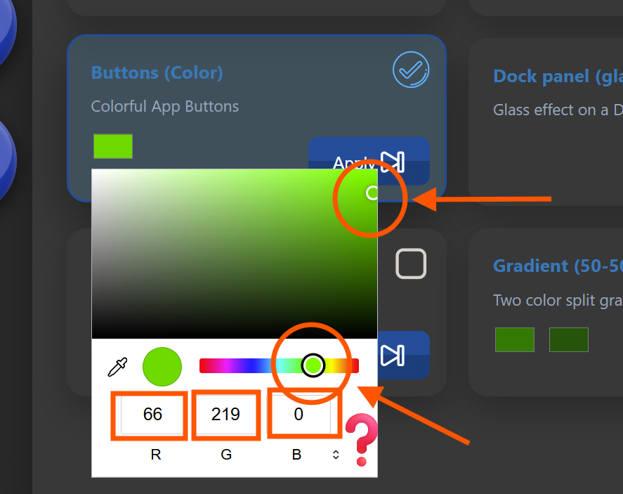
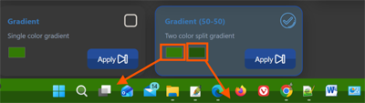
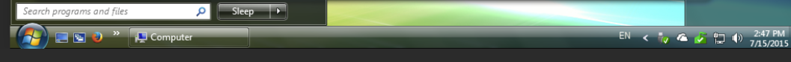
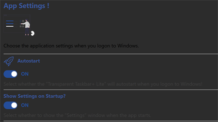
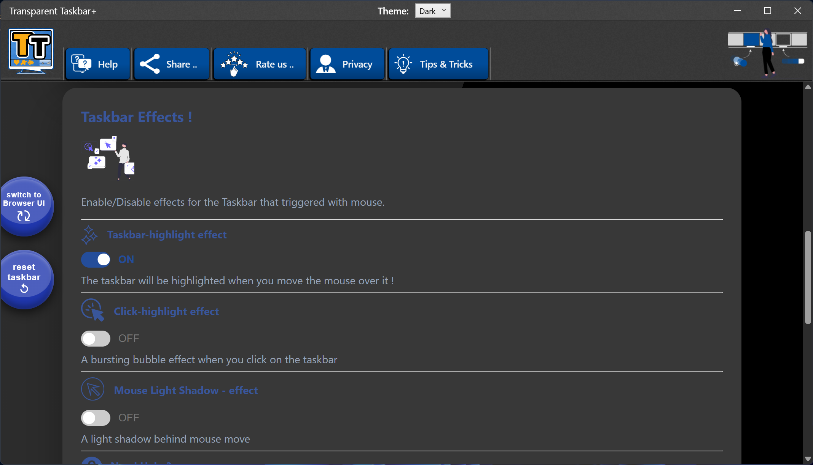

Tips and Tricks
Transparent Taskbar+ Lite
Choose the right colors and styles

Choose the right colors and styles
Tired of the static, grey taskbar? Transparent Taskbar+ Lite brings professional aesthetic tools to your Windows desktop. Whether you want a minimalist transparent look or a vibrant animated gradient, our engine delivers it with zero impact on system stability.

To change the color for a style, click on it and either:

When you select the two colors split gradient, choose the one as a slightly darker of the same color. For example:

The right color is the lower one as seen in the gradient. The left one appears on the top of the gradient.
This style mimics the old Windows Vista taskbar style (!)

The Transparent Taskbar+ Lite will autostart with the Windows start. To minimize any memory usage, just keep the Settings User Interface closed, either it is the Browser UI or the Windows UI.

When using one of the available effects, keep in mind that the app will make use of a very small percentage of the GPU when needed, when the mouse is over the Taskbar. If you don't enable effects, no gpu is used.


No. Transparent Taskbar+ Lite runs in the background and uses minimal system resources.
Yes. The browser interface requires an internet connection.
Yes. Open the system tray menu and select Exit to stop the application completely.
Get Transparent Taskbar+ Lite and start customizing your Windows taskbar today: